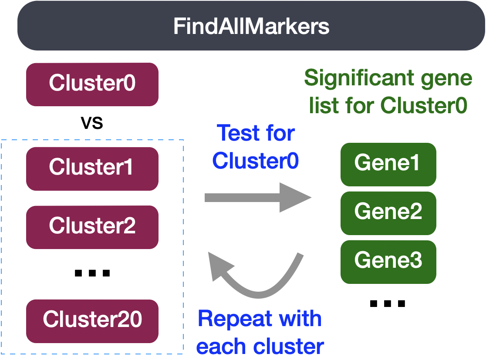

## DO NOT RUN THIS CODE ##
# Find markers for every cluster compared to all remaining cells, report only the positive ones
markers <- FindAllMarkers(object = seurat_integrated,
only.pos = TRUE,
logfc.threshold = 0.25) Marker identification
Approximate time: 75 minutes
Learning Objectives:
- Describe how to determine markers of individual clusters
- Discuss the iterative processes of clustering and marker identification
Single-cell RNA-seq marker identification
Now that we have identified our desired clusters, we can move on to marker identification, which will allow us to verify the identity of certain clusters and help surmise the identity of any unknown clusters.

Goals:
- To determine the gene markers for each of the clusters
- To identify cell types of each cluster using markers
- To determine whether there’s a need to re-cluster based on cell type markers, perhaps clusters need to be merged or split
Challenges:
- Over-interpretation of the results
- Combining different types of marker identification
Recommendations:
- Think of the results as hypotheses that need verification. Inflated p-values can lead to over-interpretation of results (essentially each cell is used as a replicate). Top markers are most trustworthy.
- Identify all markers conserved between conditions for each cluster
- Identify markers that are differentially expressed between specific clusters
Our clustering analysis resulted in the following clusters:

Remember that we had the following questions from the clustering analysis:
- Do the clusters corresponding to the same cell types have biologically meaningful differences? Are there subpopulations of these cell types?
- Can we acquire higher confidence in these cell type identities by identifying other marker genes for these clusters?
There are a few different types of marker identification that we can explore using Seurat to get to the answer of these questions. Each with their own benefits and drawbacks:
- Identification of all markers for each cluster: this analysis compares each cluster against all others and outputs the genes that are differentially expressed/present.
- Useful for identifying unknown clusters and improving confidence in hypothesized cell types.
- Identification of conserved markers for each cluster: This analysis looks for genes that are differentially expressed/present within each condition first, and then reports those genes that are conserved in the cluster across all conditions. These genes can help to figure out the identity for the cluster.
- Useful with more than one condition to identify cell type markers that are conserved across conditions.
- Marker identification between specific clusters: this analysis explores differentially expressed genes between specific clusters.
- Useful for determining differences in gene expression between clusters that appear to be representing the same celltype (i.e with markers that are similar) from the above analyses.
Identification of all markers for each cluster
This type of analysis is typically recommended for when evaluating a single sample group/condition. With the FindAllMarkers() function we are comparing each cluster against all other clusters to identify potential marker genes. The cells in each cluster are treated as replicates, and essentially a differential expression analysis is performed with some statistical test.
Note
The default is a Wilcoxon Rank Sum test, but there are other options available.

The FindAllMarkers() function has three important arguments which provide thresholds for determining whether a gene is a marker:
logfc.threshold: minimum log2 fold change for average expression of gene in cluster relative to the average expression in all other clusters combined. Default is 0.25.- Cons:
- could miss those cell markers that are expressed in a small fraction of cells within the cluster of interest, but not in the other clusters, if the average logfc doesn’t meet the threshold
- could return a lot of metabolic/ribosomal genes due to slight differences in metabolic output by different cell types, which are not as useful to distinguish cell type identities
- Cons:
min.diff.pct: minimum percent difference between the percent of cells expressing the gene in the cluster and the percent of cells expressing gene in all other clusters combined.- Cons: could miss those cell markers that are expressed in all cells, but are highly up-regulated in this specific cell type
min.pct: only test genes that are detected in a minimum fraction of cells in either of the two populations. Meant to speed up the function by not testing genes that are very infrequently expressed. Default is 0.1.- Cons: if set to a very high value could incur many false negatives due to the fact that not all genes are detected in all cells (even if it is expressed)
You could use any combination of these arguments depending on how stringent/lenient you want to be. Also, by default this function will return to you genes that exhibit both positive and negative expression changes. Typically, we add an argument only.pos to opt for keeping only the positive changes. The code to find markers for each cluster is shown below. We will not run this code.
Note
This command can take quite long to run, as it is processing each individual cluster against all other cells.
Identification of conserved markers in all conditions
Since we have samples representing different conditions in our dataset, our best option is to find conserved markers. This function internally separates out cells by sample group/condition, and then performs differential gene expression testing for a single specified cluster against all other clusters (or a second cluster, if specified). Gene-level p-values are computed for each condition and then combined across groups using meta-analysis methods from the MetaDE R package.

Before we start our marker identification we will explicitly set our default assay, we want to use the normalized data, but not the integrated data.
DefaultAssay(seurat_integrated) <- "RNA"The default assay should have already been RNA, because we set it up in the previous clustering quality control lesson. But we encourage you to run this line of code above to be absolutely sure in case the active slot was changed somewhere upstream in your analysis.
Why don’t we use SCT normalized data?
Note that the raw and normalized counts are stored in the counts and data slots of RNA assay, respectively. By default, the functions for finding markers will use normalized data if RNA is the DefaultAssay. The number of features in the RNA assay corresponds to all genes in our dataset.
Now if we consider the SCT assay, functions for finding markers would use the scale.data slot which is the pearson residuals that come out of regularized NB regression. Differential expression on these values can be difficult interpret. Additionally, only the variable features are represented in this assay and so we may not have data for some of our marker genes.
The function FindConservedMarkers(), has the following structure:
FindConservedMarkers() syntax:
## DO NOT RUN ##
FindConservedMarkers(seurat_integrated,
ident.1 = cluster,
grouping.var = "sample",
only.pos = TRUE,
min.diff.pct = 0.25,
min.pct = 0.25,
logfc.threshold = 0.25)You will recognize some of the arguments we described previously for the FindAllMarkers() function; this is because internally it is using that function to first find markers within each group. Here, we list some additional arguments which provide for when using FindConservedMarkers():
ident.1: this function only evaluates one cluster at a time; here you would specify the cluster of interest.grouping.var: the variable (column header) in your metadata which specifies the separation of cells into groups
For our analysis we will be fairly lenient and use only the log fold change threshold greater than 0.25. We will also specify to return only the positive markers for each cluster.
Let’s test it out on one cluster to see how it works:
cluster0_conserved_markers <- FindConservedMarkers(seurat_integrated,
ident.1 = 0,
grouping.var = "sample",
only.pos = TRUE,
logfc.threshold = 0.25)The output from the FindConservedMarkers() function, is a matrix containing a ranked list of putative markers listed by gene ID for the cluster we specified, and associated statistics. Note that the same set of statistics are computed for each group (in our case, Ctrl and Stim) and the last two columns correspond to the combined p-value across the two groups. We describe some of these columns below:
- gene: gene symbol
- condition_p_val: p-value not adjusted for multiple test correction for condition
- condition_avg_logFC: average log fold change for condition. Positive values indicate that the gene is more highly expressed in the cluster.
- condition_pct.1: percentage of cells where the gene is detected in the cluster for condition
- condition_pct.2: percentage of cells where the gene is detected on average in the other clusters for condition
- condition_p_val_adj: adjusted p-value for condition, based on bonferroni correction using all genes in the dataset, used to determine significance
- max_pval: largest p value of p value calculated by each group/condition
- minimump_p_val: combined p value
Note
Since each cell is being treated as a replicate this will result in inflated p-values within each group! A gene may have an incredibly low p-value < 1e-50 but that doesn’t translate as a highly reliable marker gene.
When looking at the output, we suggest looking for markers with large differences in expression between pct.1 and pct.2 and larger fold changes. For instance if pct.1 = 0.90 and pct.2 = 0.80, it may not be as exciting of a marker. However, if pct.2 = 0.1 instead, the bigger difference would be more convincing. Also, of interest is if the majority of cells expressing the marker is in my cluster of interest. If pct.1 is low, such as 0.3, it may not be as interesting. Both of these are also possible parameters to include when running the function, as described above.
Adding Gene Annotations
It can be helpful to add columns with gene annotation information. In order to do that we will load in an annotation file located in your data folder, using the code provided below:
annotations <- read.csv("../data/annotation.csv")
Note
If you are interested in knowing how we obtained this annotation file, take a look at the linked materials.
First, we will turn the row names with gene identifiers into its own columns. Then we will merge this annotation file with our results from the FindConservedMarkers():
# Combine markers with gene descriptions
cluster0_ann_markers <- cluster0_conserved_markers %>%
rownames_to_column(var="gene") %>%
left_join(y = unique(annotations[, c("gene_name", "description")]),
by = c("gene" = "gene_name"))
head(cluster0_ann_markers) gene stim_p_val stim_avg_log2FC stim_pct.1 stim_pct.2 stim_p_val_adj
1 CCR7 0 1.2798175 0.927 0.430 0
2 SELL 0 1.4023434 0.832 0.370 0
3 LDHB 0 1.4447683 0.732 0.304 0
4 GIMAP7 0 1.1120136 0.934 0.507 0
5 LTB 0 1.3746583 0.702 0.295 0
6 RPL10A 0 0.7947952 0.966 0.664 0
ctrl_p_val ctrl_avg_log2FC ctrl_pct.1 ctrl_pct.2 ctrl_p_val_adj
1 0.000000e+00 1.3185064 0.839 0.368 0.000000e+00
2 0.000000e+00 1.8564100 0.610 0.186 0.000000e+00
3 2.056415e-293 1.2074798 0.734 0.356 2.892347e-289
4 0.000000e+00 1.2337458 0.804 0.380 0.000000e+00
5 0.000000e+00 1.3920719 0.770 0.327 0.000000e+00
6 0.000000e+00 0.5195068 0.969 0.809 0.000000e+00
max_pval minimump_p_val
1 0.000000e+00 0
2 0.000000e+00 0
3 2.056415e-293 0
4 0.000000e+00 0
5 0.000000e+00 0
6 0.000000e+00 0
description
1 C-C motif chemokine receptor 7 [Source:HGNC Symbol;Acc:HGNC:1608]
2 selectin L [Source:HGNC Symbol;Acc:HGNC:10720]
3 lactate dehydrogenase B [Source:HGNC Symbol;Acc:HGNC:6541]
4 GTPase, IMAP family member 7 [Source:HGNC Symbol;Acc:HGNC:22404]
5 lymphotoxin beta [Source:HGNC Symbol;Acc:HGNC:6711]
6 ribosomal protein L10a [Source:HGNC Symbol;Acc:HGNC:10299]
Exercises
- In the previous lesson, we identified cluster 10 as FCGR3A+ monocytes by inspecting the expression of known cell markers FCGR3A and MS4A7. Use
FindConservedMarkers()function to find conserved markers for cluster 10. What do you observe? Do you see FCGR3A and MS4A7 as highly expressed genes in cluster 10?
Running on multiple samples
The function FindConservedMarkers() accepts a single cluster at a time, and we could run this function as many times as we have clusters. However, this is not very efficient. Instead we will first create a function to find the conserved markers including all the parameters we want to include. We will also add a few lines of code to modify the output. Our function will:
- Run the
FindConservedMarkers()function - Transfer row names to a column using
rownames_to_column()function - Merge in annotations
- Create the column of cluster IDs using the
cbind()function
# Create function to get conserved markers for any given cluster
get_conserved <- function(cluster){
FindConservedMarkers(seurat_integrated,
ident.1 = cluster,
grouping.var = "sample",
only.pos = TRUE) %>%
rownames_to_column(var = "gene") %>%
left_join(y = unique(annotations[, c("gene_name", "description")]),
by = c("gene" = "gene_name")) %>%
cbind(cluster_id = cluster, .)
}Now that we have this function created we can use it as an argument to the appropriate map function. We want the output of the map family of functions to be a dataframe with each cluster output bound together by rows, we will use the map_dfr() function.
map family syntax:
## DO NOT RUN ##
map_dfr(inputs_to_function, name_of_function)Now, let’s try this function to find the conserved markers for the clusters that were identified as CD4+ T cells (4,0,6,2) from our use of known marker genes. Let’s see what genes we identify and of there are overlaps or obvious differences that can help us tease this apart a bit more.
# Iterate function across desired clusters
conserved_markers <- map_dfr(c(4,0,6,2), get_conserved)
head(conserved_markers) cluster_id gene stim_p_val stim_avg_log2FC stim_pct.1 stim_pct.2
1 4 EIF1 0.000000e+00 0.4723411 0.992 0.926
2 4 AC026979.2 7.026043e-238 4.4271681 0.157 0.010
3 4 SRSF2 7.842593e-260 2.1962219 0.543 0.161
4 4 BTG1 9.918923e-225 0.7148641 0.936 0.726
5 4 HSPH1 2.191992e-151 2.4007275 0.333 0.091
6 4 NR4A2 2.914853e-115 3.2800433 0.126 0.016
stim_p_val_adj ctrl_p_val ctrl_avg_log2FC ctrl_pct.1 ctrl_pct.2
1 0.000000e+00 3.178029e-271 0.4172717 0.976 0.912
2 9.882129e-234 4.082678e-291 4.6142429 0.177 0.010
3 1.103061e-255 2.348094e-234 2.0261441 0.537 0.181
4 1.395097e-220 3.139357e-250 0.5747494 0.952 0.827
5 3.083036e-147 1.587155e-245 2.9187251 0.359 0.073
6 4.099741e-111 1.877585e-229 3.6920102 0.197 0.019
ctrl_p_val_adj max_pval minimump_p_val
1 4.469898e-267 3.178029e-271 0.000000e+00
2 5.742287e-287 7.026043e-238 8.165357e-291
3 3.302594e-230 2.348094e-234 1.568519e-259
4 4.415506e-246 9.918923e-225 6.278715e-250
5 2.232333e-241 2.191992e-151 3.174310e-245
6 2.640824e-225 2.914853e-115 3.755170e-229
description
1 eukaryotic translation initiation factor 1 [Source:HGNC Symbol;Acc:HGNC:3249]
2 novel transcript
3 serine and arginine rich splicing factor 2 [Source:HGNC Symbol;Acc:HGNC:10783]
4 BTG anti-proliferation factor 1 [Source:HGNC Symbol;Acc:HGNC:1130]
5 heat shock protein family H (Hsp110) member 1 [Source:HGNC Symbol;Acc:HGNC:16969]
6 nuclear receptor subfamily 4 group A member 2 [Source:HGNC Symbol;Acc:HGNC:7981]
Finding markers for all clusters
For your data, you may want to run this function on all clusters, in which case you could input 0:20 instead of c(4,0,6,2); however, it would take quite a while to run. Also, it is possible that when you run this function on all clusters, in some cases you will have clusters that do not have enough cells for a particular group - and your function will fail. For these clusters you will need to use FindAllMarkers().
Evaluating marker genes
We would like to use these gene lists to see of we can identify which celltypes these clusters identify with. Let’s take a look at the top genes for each of the clusters and see if that gives us any hints. We can view the top 10 markers by average fold change across the two groups, for each cluster for a quick perusal:
# Extract top 10 markers per cluster
top10 <- conserved_markers %>%
mutate(avg_fc = (ctrl_avg_log2FC + stim_avg_log2FC) /2) %>%
group_by(cluster_id) %>%
top_n(n = 10,
wt = avg_fc)# Visualize top 10 markers per cluster
View(top10)

When we look at the entire list, we see clusters 0 and 6 have some overlapping genes, like CCR7 and SELL which correspond to markers of memory T cells. It is possible that these two clusters are more similar to one another and could be merged together as naive T cells. On the other hand, with cluster 2 we observe CREM as one of our top genes; a marker gene of activation. This suggests that perhaps cluster 2 represents activated T cells.
| Cell State | Marker |
|---|---|
| Naive T cells | CCR7, SELL |
| Activated T cells | CREM, CD69 |
For cluster 4, we see a lot of heat shock and DNA damage genes appear in the top gene list. Based on these markers, it is likely that these are stressed or dying cells. However, if we explore the quality metrics for these cells in more detail (i.e. mitoRatio and nUMI overlayed on the cluster) we don’t really support for this argument. There is a breadth of research supporting the association of heat shock proteins with reactive T cells in the induction of anti‐inflammatory cytokines in chronic inflammation. This is a cluster for which we would need a deeper understanding of immune cells to really tease apart the results and make a final conclusion.
Visualizing marker genes
To get a better idea of cell type identity for cluster 4 we can explore the expression of different identified markers by cluster using the FeaturePlot() function. We see that only a subset of cluster 4 are highly expressing these genes.
# Plot interesting marker gene expression for cluster 4
FeaturePlot(object = seurat_integrated,
features = c("HSPH1", "HSPE1", "DNAJB1"),
order = TRUE,
min.cutoff = 'q10',
label = TRUE,
repel = TRUE)We can also explore the range in expression of specific markers by using violin plots:
Violin plots
Violin plots are similar to box plots, except that they also show the probability density of the data at different values, usually smoothed by a kernel density estimator. A violin plot is more informative than a plain box plot. While a box plot only shows summary statistics such as mean/median and interquartile ranges, the violin plot shows the full distribution of the data. The difference is particularly useful when the data distribution is multimodal (more than one peak). In this case a violin plot shows the presence of different peaks, their position and relative amplitude.
# Vln plot - cluster 4
VlnPlot(object = seurat_integrated,
features = c("HSPH1", "HSPE1", "DNAJB1"))These results and plots can help us determine the identity of these clusters or verify what we hypothesize the identity to be after exploring the canonical markers of expected cell types previously.
Identifying gene markers for each cluster
Sometimes the list of markers returned don’t sufficiently separate some of the clusters. For instance, we had previously identified clusters 0, 4, 6 and 2 as CD4+ T cells, but when looking at marker gene lists we identfied markers to help us further subset cells. We were lucky and the signal observed from FindAllMarkers() helped us differentiate between naive and activated cells. Another option to identify biologically meaningful differences would be to use the FindMarkers() function to determine the genes that are differentially expressed between two specific clusters.

We can try all combinations of comparisons, but we’ll start with cluster 2 versus all other CD4+ T cell clusters:
# Determine differentiating markers for CD4+ T cell
cd4_tcells <- FindMarkers(seurat_integrated,
ident.1 = 2,
ident.2 = c(0,4,6))
# Add gene symbols to the DE table
cd4_tcells <- cd4_tcells %>%
rownames_to_column(var = "gene") %>%
left_join(y = unique(annotations[, c("gene_name", "description")]),
by = c("gene" = "gene_name"))
# Reorder columns and sort by padj
cd4_tcells <- cd4_tcells[, c(1, 3:5,2,6:7)]
cd4_tcells <- cd4_tcells %>%
dplyr::arrange(p_val_adj) # View data
View(cd4_tcells)
Of these top genes the CREM gene stands out as a marker of activation with a positive fold change. We also see markers of naive or memory cells include the SELL and CCR7 genes with negative fold changes, which is in line with previous results.
As markers for the naive and activated states both showed up in the marker list, it is helpful to visualize expression. Based on these plots it seems as though clusters 0 and 2 are reliably the naive T cells. However, for the activated T cells it is hard to tell. We might say that clusters 4 and 18 are activated T cells, but the CD69 expression is not as apparent as CREM. We will label the naive cells and leave the remaining clusters labeled as CD4+ T cells.
Now taking all of this information, we can surmise the cell types of the different clusters and plot the cells with cell type labels.
| Cluster ID | Cell Type |
|---|---|
| 0 | Naive or memory CD4+ T cells |
| 1 | CD14+ monocytes |
| 2 | Activated T cells |
| 3 | CD14+ monocytes |
| 4 | Stressed cells / Unknown |
| 5 | CD8+ T cells |
| 6 | Naive or memory CD4+ T cells |
| 7 | B cells |
| 8 | NK cells |
| 9 | CD8+ T cells |
| 10 | FCGR3A+ monocytes |
| 11 | B cells |
| 12 | NK cells |
| 13 | B cells |
| 14 | Conventional dendritic cells |
| 15 | Megakaryocytes |
| 16 | Plasmacytoid dendritic cells |
We can then reassign the identity of the clusters to these cell types:
# Rename all identities
seurat_integrated <- RenameIdents(object = seurat_integrated,
"0" = "Naive or memory CD4+ T cells",
"1" = "CD14+ monocytes",
"2" = "Activated T cells",
"3" = "CD14+ monocytes",
"4" = "Stressed cells / Unknown",
"5" = "CD8+ T cells",
"6" = "Naive or memory CD4+ T cells",
"7" = "B cells",
"8" = "NK cells",
"9" = "CD8+ T cells",
"10" = "FCGR3A+ monocytes",
"11" = "B cells",
"12" = "NK cells",
"13" = "B cells",
"14" = "Conventional dendritic cells",
"15" = "Megakaryocytes",
"16" = "Plasmacytoid dendritic cells")
# Plot the UMAP
DimPlot(object = seurat_integrated,
reduction = "umap",
label = TRUE,
label.size = 3,
repel = TRUE)If we wanted to remove the potentially stressed cells, we could use the subset() function:
# Remove the stressed or dying cells
seurat_subset_labeled <- subset(seurat_integrated,
idents = "Stressed cells / Unknown", invert = TRUE)
# Re-visualize the clusters
DimPlot(object = seurat_subset_labeled,
reduction = "umap",
label = TRUE,
label.size = 3,
repel = TRUE)Now we would want to save our final labelled Seurat object and the output of sessionInfo():
# Save final R object
write_rds(seurat_integrated,
file = "../results/seurat_labelled.rds")
# Create and save a text file with sessionInfo
sink("../results/sessionInfo_scrnaseq_Feb2023.txt")
sessionInfo()
sink()
Note
You can find out more about the sink() function at this link.
Now that we have our clusters defined and the markers for each of our clusters, we have a few different questions we can answer:
- Determine if there is a shift in cell populations between
ctrlandstim. Ideally this would be done with replicates to determine if the changes are significant.
# Add celltype annotation as a column in meta.data
seurat_subset_labeled$celltype <- Idents(seurat_subset_labeled)
# Compute number of cells per celltype
n_cells <- FetchData(seurat_subset_labeled,
vars = c("celltype", "sample")) %>%
dplyr::count(celltype, sample)
# Barplot of number of cells per celltype by sample
ggplot(n_cells, aes(x=celltype, y=n, fill=sample)) +
geom_bar(position=position_dodge(), stat="identity") +
theme_classic() +
geom_text(aes(label=n), vjust = -.2, position=position_dodge(1))- Perform differential expression analysis between conditions
ctrlandstim- Biological replicates are necessary to proceed with this analysis, and we have additional materials to help walk through this analysis.
- For a first pass look, we can use the
FindMarkers()function we have been using to do a simple wilcox test to see the difference in gene expression between conditions for the B cells
# Subset seurat object to just B cells
seurat_b_cells <- subset(seurat_subset_labeled, subset = (celltype == "B cells"))
# Run a wilcox test to compare ctrl vs stim
Idents(seurat_b_cells) <- "sample"
b_markers <- FindMarkers(seurat_b_cells,
ident.1 = "ctrl",
ident.2 = "stim",
grouping.var = "sample",
only.pos = FALSE,
logfc.threshold = 0.25)
head(b_markers) p_val avg_log2FC pct.1 pct.2 p_val_adj
IFIT3 0 -5.311956 0.036 0.927 0
IFI6 0 -4.340583 0.067 0.931 0
IFIT1 0 -5.611324 0.023 0.845 0
ISG15 0 -3.433947 0.174 0.995 0
MX1 0 -3.682686 0.089 0.857 0
LY6E 0 -3.232020 0.126 0.848 0- For added visualization, we can used the
EnhancedVolcano()function to see how the genes fall on a volcano plot.
library(EnhancedVolcano)
EnhancedVolcano(b_markers,
row.names(b_markers),
x="avg_log2FC",
y="p_val_adj",
title="B Cells",
subtitle="Stim vs. Ctrl"
)- Experimentally validate intriguing markers for our identified cell types.
- Explore a subset of the cell types to discover subclusters of cells as described here
- Trajectory analysis, or lineage tracing, could be performed if trying to determine the progression between cell types or cell states. For example, we could explore any of the following using this type of analysis:
- Differentiation processes
- Expression changes over time
- Cell state changes in expression